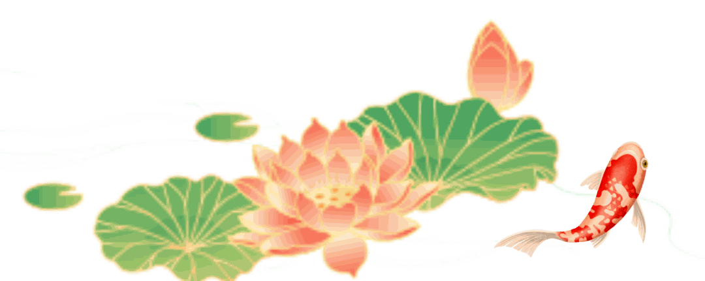

【行者无疆·津彩化韵】个人实践感悟——张瑶琪



来源 | 行者无疆实践团
图片 | 行者无疆实践团
文字 | 张瑶琪
编辑 | 张瑶琪
审核 | 张瑶琪 李凌志 杩健辉
责编 | 邹靓靓 周 亮

来源 | 行者无疆实践团
图片 | 行者无疆实践团
文字 | 张瑶琪
编辑 | 张瑶琪
审核 | 张瑶琪 李凌志 杩健辉
责编 | 邹靓靓 周 亮
SAME EXPEDITION / 同期推文

梯坎藏古韵，巴渝蕴非遗！行者无疆实践团此番奔赴重庆，邀你解锁川剧变脸的灵动、荣昌陶的匠心、火锅非遗的烟火气～ 无论你擅长调研、文案记录，还是拍摄剪辑、非遗传播，只要热爱传统文化

行者无疆津彩化遗和行者无疆实践团在天津，一起度过了四天半的时间，真的舍不得结束。这几天里我们走了很多地方，接触了好几种非遗技艺：在王氏泥塑捏泥人、在面塑坊一起捏了哪吒、去看杨柳

行者无疆津彩化韵在五天的实践中我沉浸于津门非遗的深厚底蕴经历了一场从技艺认知到文化认同的心灵震撼从博物馆的厚重展陈到乡间工作室的鲜活创作，从年画的斑斓色彩到泥塑的质朴形态，从风